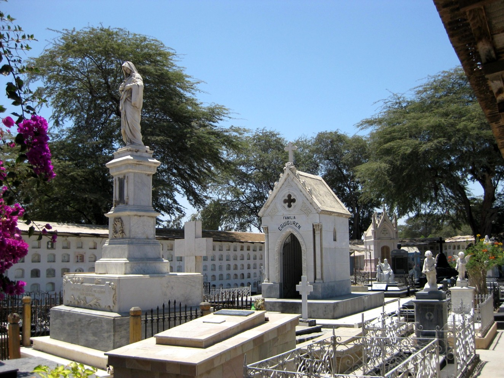

Preservando el Arte de Piura
Un museo a cielo abierto. Este archivo preserva el valor histórico y arquitectónico de los nichos y esculturas del Cementerio San Teodoro mediante digitalización por fotogrametría.

Un Museo a Cielo Abierto
El Cementerio San Teodoro alberga un invaluable patrimonio arquitectónico y escultórico. Cada nicho y mausoleo representa una pieza fundamental del arte funerario regional que merece ser estudiada y preservada.
Este proyecto de tesis busca democratizar el acceso a nuestra historia. Mediante la digitalización por fotogrametría, logramos que estudiantes escolares, universitarios e investigadores puedan explorar estas obras a detalle desde cualquier lugar.
Catálogo 3D y Archivo
Únase a la Preservación
¿Posee registros familiares, fotografías o datos históricos vinculados al San Teodoro? Su contribución es vital para completar este rompecabezas histórico.
CONTACTAR CON ARCHIVÍSTICAUbicación del Cementerio
El Cementerio General San Teodoro se encuentra en el corazón de Piura. Puedes visitarlo para estudiar las obras de arte funerario en la siguiente dirección:
📍 Av. Vice / Calle San Teodoro, Piura, Perú.